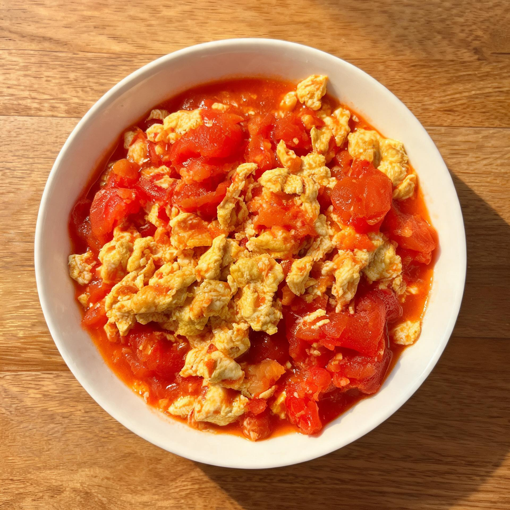
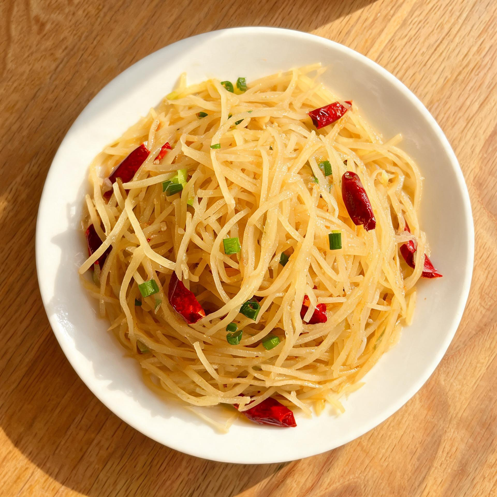
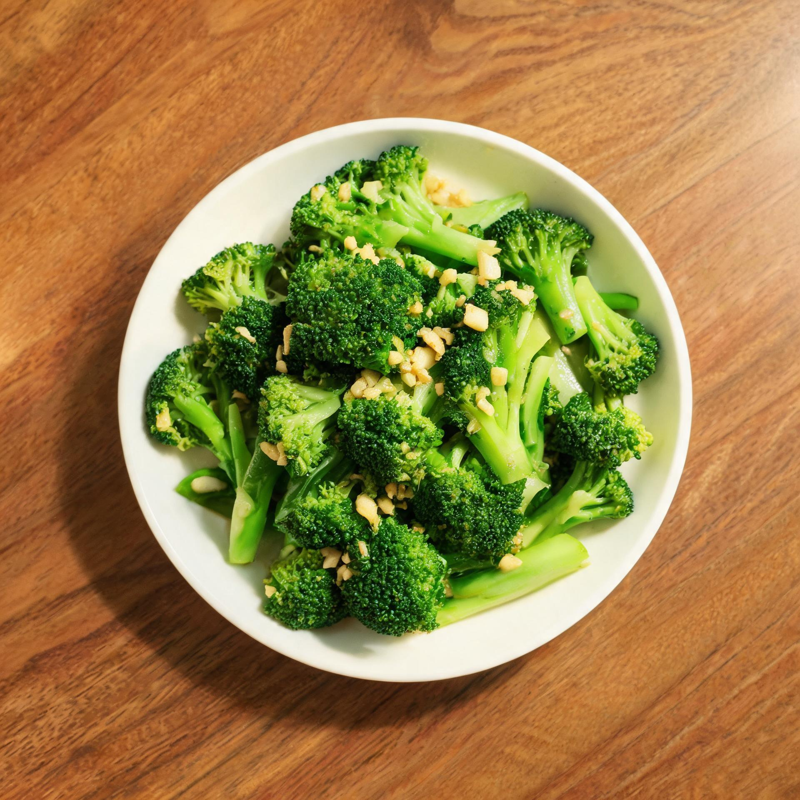
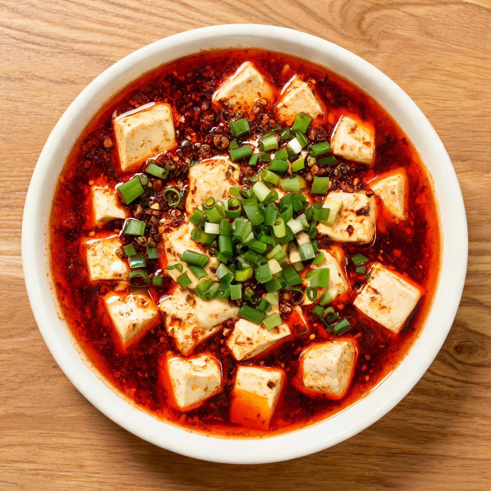

烹饪之王 · 家庭点菜微信小程序
组织化的烹饪管理，营造您自己的点餐—烹饪—出餐平台。产品模型不是"一个人向厨师下单"，而是每位成员独立点菜、汇总成制作任务、谁接单谁制作、逐道菜记录完成、统一确认出餐的协作系统。
01产品概述
已确认的产品决策在本版全部回填，不再以假设方式推进。
1.1 定位
面向家庭与小团队的私有饮食协作平台，以微信小程序为入口，覆盖饮食规划、个人点菜、接单制作、出餐确认、菜谱积累、饮食统计与营养分析。
1.2 已确认决策
| 决策项 | 确认结果 | 对设计的影响 |
|---|---|---|
| 使用平台 | 微信小程序 | 微信登录作为身份来源，微信订阅消息作为通知通道 |
| 账号模式 | 家庭共享数据，区分成员身份 | 数据以家庭为边界；"我"与"他人"必须可区分，权限校验在后端 |
| 点菜方式 | 每人独立点菜，厨师汇总制作 | 个人点菜单是独立对象，不能与汇总单合并成一张表 |
| 厨师安排 | 谁接单谁制作 | 不设固定厨师角色，改为"制作成员"按任务认领 |
| 通知方式 | 微信通知优先 | 站内通知为兜底基础通道，订阅消息为增强通道 |
| 菜谱录入 | 手动录入，预留图片/文档 AI 导入 | 菜谱表预留版本与导入任务结构，第一版不实现解析 |
| 点菜截止 | 成员手动确认汇总并开始制作 | 不做定时截止任务，避免时区与超时状态复杂度 |
| 份数含义 | 默认每人点自己的份数，可标记多人共享 | 份数 ≠ 食用人数 ≠ 实际摄入量，三者分开记录 |
| 出餐确认 | 厨师确认出餐，允许逐道菜记录完成 | 菜品状态与整餐状态分离，两层状态机 |
| 营养录入 | 第一版接入 AI 估算 + 人工确认 | 营养估算有独立状态：待估算 → 待确认 → 已确认 |
| 存储方式 | 先设计可替换架构 | 业务接口稳定，底层存储与三方服务通过适配层隔离 |
| 确认菜单权限 | 仅家庭创建者可点「确认并开始制作」 | 确认是唯一的"锁定点菜、生成任务"入口，权限收敛到一人 |
| 追加菜品 | 确认后不开放追加 | 想补菜走「加餐」，不做追加窗口与变更流程 |
| 加餐次数 | 不限次数，一天可多个加餐 | 餐次唯一约束不能只按 日期+餐次类型，需引入序号 |
| 成员在家状态 | 不做 | 不维护"是否回家吃饭"，提交进度只反映点菜动作 |
| 期望用餐时间 | 不做 | 不设置开饭时间点，厨师按接单顺序处理 |
| 忌口与过敏 | 作为成员档案结构化维护 | 点菜时对命中过敏原的菜提示，制作时高亮 |
| 食材采购清单 | 由餐次汇总自动生成 | 按总份数换算食材用量并按食材合并 |
| 菜谱归档 | 归档后不进入点菜候选与随机抽菜，可恢复 | 支持「不再常做」与「时令菜过季」两种场景 |
| 成员退出 | 历史点菜与出餐记录保留在家庭 | 不随成员退出而删除或匿名化 |
1.3 目标与边界
| 目标 | 衡量方式 |
|---|---|
| 降低选菜成本 | 支持搜索、标签筛选、随机推荐，从打开到提交点菜单不超过一次连续操作 |
| 提高协作效率 | 多人点菜后可在汇总页看到合计份数与每个人需求 |
| 沉淀家庭菜谱资产 | 菜谱可创建、修改、归档，历史订单引用不受删除影响 |
| 保证过程可追踪 | 从个人提交到实际出餐每一步都有状态、责任人与时间 |
| 了解饮食规律 | 可查看历史菜单、热门菜、餐次分布与营养趋势 |
不做：公开菜谱社区、外卖与支付、商家管理、库存采购、多人跨家庭共享。第一版一个微信用户只加入一个家庭。
02业务流程与对象模型
先说清楚"哪些东西是不同的东西"，这是本产品最容易设计错的地方。
2.1 主流程
2.2 四个不能合并的对象
| 对象 | 定义 | 为什么不能合并 |
|---|---|---|
| 家庭 | 成员、菜谱、餐次、任务、通知、统计的共享边界 | 是所有数据的隔离单位，权限与统计都挂在它上面 |
| 餐次 | 某一天的早 / 中 / 晚 / 加餐 | 是时间容器；把"订单"当中心对象会让多餐多任务无处归属 |
| 个人点菜单 | 每位成员在某个餐次里的独立选择 | 合并后无法还原"谁的几份"，个人营养与改单都会失真 |
| 制作任务 | 汇总后由接单人负责的执行单元，内含多个菜品明细 | 制作由"谁接单"决定，与点菜人无关 |
2.3 对象链路
| 层级 | 对象 | 基数关系 |
|---|---|---|
| 1 | 家庭 Household | 1 : N 成员 / 菜谱 / 餐次 |
| 2 | 餐次 Meal Session | 1 : N 个人点菜单；1 : 1 汇总单 |
| 3 | 个人点菜单 Personal Order | 1 : N 菜品明细；每餐每人仅一份有效单 |
| 4 | 餐次汇总单 Meal Aggregate | 1 : N 制作任务；保存汇总快照 |
| 5 | 制作任务 Production Task | 1 : N 菜品明细；任一时刻至多一个有效接单人 |
| 6 | 出餐记录 Serving Record | 记录计划份数与实际份数 |
| 7 | 营养摄入 Nutrition Intake | 按成员 × 餐次记录实际食用份额与营养素 |
03角色与权限
不设复杂管理员体系；角色可叠加，家庭创建者也能点菜和接单。
3.1 角色定义
| 角色 | 权限 | 叠加 |
|---|---|---|
| 家庭创建者 | 创建家庭、邀请成员、管理成员与家庭设置、转移创建者；唯一有权确认菜单并开始制作 | 可叠加其余全部 |
| 普通成员 | 浏览菜谱、独立点菜、修改本人未锁定点菜单、查看家庭菜单与统计 | 基础角色 |
| 制作成员 | 认领待接任务、开始制作、更新进度、登记逐菜完成、确认出餐 | 由"接单"动作获得，不预先任命 |
| 菜谱贡献者 | 创建菜谱、编辑自己创建的菜谱 | 是否可改他人菜谱由家庭设置决定 待定 |
3.2 身份与隔离
- 微信登录换取服务端会话，服务端解析身份，不信任客户端传入的 userId。
- 每个家庭一个独立数据空间，成员通过邀请码/分享卡片加入。
- 邀请码有有效期与使用次数上限，避免私有数据被无关人员访问。
- 第一版一个微信用户只加入一个家庭；多家庭切换列为后续。
- 创建者退出前必须能转移权限，不能让家庭空间失去管理能力。
04功能需求与验收标准
P0 = MVP 必须；P1 = 第一版之后优先；P2 = 后续扩展。编号供开发与测试直接引用。
4.1 家庭与成员
| 编号 | 需求 | 级别 | 验收标准 |
|---|---|---|---|
| FAM-01 | 创建家庭 | P0 | 登录用户可创建家庭并成为创建者 |
| FAM-02 | 邀请成员 | P0 | 通过有效邀请加入后可访问家庭数据 |
| FAM-03 | 成员列表 | P0 | 展示头像、昵称与成员身份 |
| FAM-04 | 权限校验 | P0 | 非家庭成员无法读取或修改家庭任何资源 |
| FAM-05 | 退出与移除 | P1 | 退出后立即失去该家庭数据访问权 |
| FAM-06 | 转移创建者 | P1 | 原创建者可把管理权限转交其他成员 |
| FAM-07 | 忌口与过敏档案 | P0 | 每位成员可维护忌口项与过敏原；点菜时命中过敏原的菜品给出提示 |
| FAM-08 | 退出后历史保留 | P0 | 成员退出后，其历史点菜与出餐记录仍保留在家庭统计中 |
4.2 日历与餐次
| 编号 | 需求 | 级别 | 验收标准 |
|---|---|---|---|
| CAL-01 | 月历查看 | P0 | 可切换月份，查看各日餐次状态标记 |
| CAL-02 | 日期详情 | P0 | 点击日期查看早餐、午餐、晚餐、加餐 |
| CAL-03 | 今日菜单 | P0 | 展示今日各餐次已提交菜品与任务状态 |
| CAL-04 | 历史饮食 | P0 | 可查询过去日期的实际出餐记录 |
| CAL-05 | 未来计划 | P1 | 可提前为未来日期点菜 |
| CAL-06 | 餐次状态汇总 | P0 | 能区分未开始 / 点菜中 / 待制作 / 制作中 / 部分出餐 / 已出餐 |
| CAL-07 | 加餐不限次数 | P0 | 同一天的加餐可创建多个，各自独立点菜与制作；早/中/晚各仅一个 |
餐次状态不能只看"有没有订单"：当 A 已提交、B 尚未提交时，餐次仍处于「点菜中」。
4.3 个人点菜
| 编号 | 需求 | 级别 | 验收标准 |
|---|---|---|---|
| ORD-01 | 选择日期与餐次 | P0 | 选定目标餐次后进入点菜，切换时提示保存草稿 |
| ORD-02 | 浏览与筛选菜谱 | P0 | 支持关键词、菜品类型、风味标签组合筛选 |
| ORD-03 | 勾选与调份数 | P0 | 可增删菜品、调整份数（非负整数） |
| ORD-04 | 备注 | P0 | 支持整餐备注与单道菜备注 |
| ORD-05 | 提交个人点菜单 | P0 | 提交后生成可追踪记录并显示提交时间与状态 |
| ORD-06 | 修改或撤销 | P0 | 按餐次状态控制：草稿/已提交可改，锁定后只读 |
| ORD-07 | 查看他人点菜 | P0 | 成员可查看汇总需求与各人明细 |
| ORD-08 | 个人点菜历史 | P1 | 可查看自己历史提交的菜品 |
| ORD-09 | 忌口提示 | P0 | 勾选含本人过敏原的菜品时提示，不强制阻断，由本人决定 |
份数、人数、食用量三者不同：一人可点 2 份同一道菜；也可点 1 份标注「多人共享」。
4.4 汇总与制作任务
| 编号 | 需求 | 级别 | 验收标准 |
|---|---|---|---|
| KIT-01 | 汇总所有成员点菜 | P0 | 同餐次菜品按菜谱归并，可展开看每人份数与备注 |
| KIT-02 | 展示总份数 | P0 | 每道菜总份数 = 有效个人需求之和 |
| KIT-03 | 认领任务 | P0 | 未被认领的任务可由家庭成员接单 |
| KIT-04 | 防止重复接单 | P0 | 并发情况下同一任务仅一个有效接单人 |
| KIT-05 | 开始制作 | P0 | 接单人可将任务置为制作中 |
| KIT-06 | 逐道菜完成 | P0 | 记录每道菜完成状态、时间与操作人 |
| KIT-07 | 整餐出餐确认 | P0 | 所有必需菜品完成后才可确认出餐 |
| KIT-08 | 拆分任务 | P1 | 一餐可拆为主食 / 热菜等多个任务，分别认领 |
| KIT-09 | 制作异常 | P1 | 可登记缺料、取消菜品、部分完成并留原因 |
| KIT-10 | 确认菜单并开始制作 | P0 | 仅家庭创建者可操作；成功后锁定点菜单并生成制作任务 |
| KIT-11 | 确认后不支持追加 | P0 | 已确认餐次不再接受新增需求；补菜入口引导至新建加餐 |
界面可提供「一键接下本餐全部菜品」，但底层必须允许按菜品分单认领，否则后续无法支持协作做饭。
4.5 菜谱
| 编号 | 需求 | 级别 | 验收标准 |
|---|---|---|---|
| REC-01 | 创建与编辑 | P0 | 可维护名称、图片、食材、步骤、时长、份量 |
| REC-02 | 食材结构化 | P0 | 每项食材含名称、数量、单位，可随份数换算 |
| REC-03 | 多标签 | P0 | 支持风味、菜品类型、难度等分类标签 |
| REC-04 | 搜索与筛选 | P0 | 关键词 + 类型 + 标签可组合 |
| REC-05 | 收藏 | P1 | 成员可维护个人收藏 |
| REC-06 | 图片上传 | P0 | 上传后列表与详情均可见 |
| REC-07 | 归档与恢复 | P0 | 归档后不进入点菜候选与随机抽菜，可随时恢复；历史订单引用不受影响 |
| REC-08 | 文档导入 | P1 | 解析文件后由用户确认字段再入库 |
| REC-09 | AI 辅助录入 | P2 | 从图片或文档提取字段，人工确认后入库 |
| REC-10 | 图片数量与压缩 | P0 | 图片数量不设上限；上传时客户端压缩，服务端生成缩略图变体，列表加载缩略图 |
| REC-11 | 时令上下架 | P1 | 可标记供应月份区间，非供应期自动不进入候选，到期可手动恢复 |
4.6 统计与营养
| 编号 | 需求 | 级别 | 验收标准 |
|---|---|---|---|
| STA-01 | 菜品热门排行 | P0 | 可按提交次数或出餐次数排序，口径在页面标注 |
| STA-02 | 周饮食记录 | P0 | 按日期展示实际出餐菜品 |
| STA-03 | 餐次分布图 | P0 | 按早 / 中 / 晚 / 加餐统计 |
| STA-04 | 菜品多样性 | P1 | 统计指定期间不同菜品数量 |
| NUT-01 | 菜谱营养字段 | P0 | 可存能量、蛋白质、脂肪、碳水，含计量基准 |
| NUT-02 | 单餐营养估算 | P1 | 汇总该餐各菜营养估算 |
| NUT-03 | 每日个人摄入 | P1 | 按个人实际食用份额估算摄入 |
| NUT-04 | 营养趋势 | P1 | 个人或家庭的周趋势图 |
| NUT-05 | 营养目标 | P2 | 可设置每日能量或营养素目标 |
4.7 通知与随机推荐
| 编号 | 需求 | 级别 | 验收标准 |
|---|---|---|---|
| MSG-01 | 任务产生提醒 | P0 | 制作任务生成后，成员可从小程序内看到 |
| MSG-02 | 状态变更通知 | P0 | 接单、出餐等状态变更对相关成员可见 |
| MSG-03 | 微信订阅消息 | P1 | 登录时申请订阅授权并在关键动作处累积额度；额度耗尽时降级站内通知，不谎报已发送 |
| RND-01 | 随机抽菜 | P0 | 从符合筛选条件的菜谱中抽取，可一键加入清单 |
| RND-02 | 排除指定菜 | P1 | 可手动排除不想吃的菜 |
| RND-03 | 近期去重 | P1 | 降低近期已吃菜品的推荐概率 |
| RND-04 | 一餐组合 | P2 | 按菜品类型搭配多道菜 |
随机抽菜的候选池只包含状态为「可用」的菜谱；已归档菜谱永远不参与抽取。
4.8 食材采购清单
| 编号 | 需求 | 级别 | 验收标准 |
|---|---|---|---|
| PUR-01 | 按汇总生成采购清单 | P0 | 餐次确认后，按各菜总份数与菜谱基准份数换算食材用量 |
| PUR-02 | 按食材合并 | P0 | 同名同单位的食材合并数量；单位不同则不合并，分别列出 |
| PUR-03 | 勾选已备 | P1 | 可逐项勾选已买/已有，未勾选项保留在清单中 |
| PUR-04 | 多餐合并 | P1 | 可把同一天的多个餐次合并为一张采购清单 |
| PUR-05 | 导出与分享 | P1 | 可复制为文本，便于发给家人或对照购买 |
换算规则：用量 = 菜谱基准用量 ÷ 基准份数 × 该菜总份数。结果保留合理精度（如「1.5 个」「300 g」），不可整除时向上取整到可购买单位。
05页面清单与导航结构
底部五个主导航：首页 / 点菜 / 菜谱 / 制作 / 统计。家庭管理与个人设置放在首页右上角，避免导航拥挤。
| ID | 页面 | 核心内容与操作 |
|---|---|---|
| P01 | 微信登录 | 微信身份登录、用户资料初始化 |
| P02 | 家庭初始化 | 创建家庭、输入邀请码、查看成员 |
| P03 | 首页 | 今日菜单、餐次状态、待处理事项、快捷点菜 |
| P04 | 日历页 | 月历切换、餐次状态标记、日期选择 |
| P05 | 餐次详情 | 个人点菜情况、汇总菜单、制作进度 |
| P06 | 点菜入口 | 选择日期、餐次，进入当前点菜单 |
| P07 | 菜谱选择器 | 搜索、筛选、标签、添加菜品 |
| P08 | 点菜清单 | 份数、备注、多人共享标记、提交 |
| P09 | 个人点菜单详情 | 修改记录、状态、撤销 |
| P10 | 餐次汇总详情 | 合并菜品、总份数、个人需求明细、确认菜单 |
| P11 | 菜谱列表 | 图片卡片、分类、搜索、收藏 |
| P12 | 菜谱详情 | 图片、食材、步骤、耗时、营养估值 |
| P13 | 新建 / 编辑菜谱 | 字段表单、食材列表、步骤编辑、标签 |
| P14 | 菜谱导入 | 上传文件、解析结果、字段确认 |
| P15 | 随机抽菜 | 条件选择、结果卡、加入清单 |
| P16 | 制作任务列表 | 待接 / 制作中 / 已完成 / 我的任务 |
| P17 | 制作任务详情 | 做法、总份数、个人要求、逐菜状态操作 |
| P18 | 出餐确认 | 完成情况、异常说明、计划 vs 实际份数 |
| P19 | 饮食统计 | 时间范围、热门菜、周饮食、餐次图表 |
| P20 | 营养统计 | 能量、蛋白质、脂肪、碳水、个人趋势 |
| P21 | 通知中心 | 新任务、接单、制作状态、出餐记录 |
| P22 | 家庭管理 | 成员、邀请、权限、创建者转移 |
| P23 | 个人设置 | 头像昵称、饮食偏好、通知授权、隐私 |
| P24 | 数据导出 | 导出菜谱与历史记录 |
| P25 | 食材采购清单 | 按餐次汇总换算合并，勾选已备，复制分享 |
| P26 | 成员档案 | 头像昵称、忌口与过敏原、通知授权状态 |
清单用于界定能力边界，不要求每项都是独立路由。随机抽菜可作为点菜页弹层；出餐确认可作为制作详情内的操作面板。
06UI 原型
干净、白底、少色、强留白：只用一种强调色承担主操作，状态色仅在必要时出现。
6.1 设计规范
| 规范项 | 取值 | 说明 |
|---|---|---|
| 字号层级 | 标题 15 / 正文 13 / 辅助 11 / 标签 10 | 统一 4 级，不出现临时字号 |
| 圆角 | 卡片 10 · 胶囊 20 · 手机壳 26 | 卡片与按钮同为柔和圆角，不用大圆角卡片 |
| 间距 | 区块 12 · 卡片内 10 · 行内 6 | 以 2 为倍数，避免零散数值 |
| 阴影 | 仅页面容器一层极轻阴影 | 卡片不用阴影，靠 1px 描边区分层级 |
| 色彩纪律 | 一屏至多一个强调色 + 一个状态色 | 状态色只出现在状态标签，不用于装饰 |
6.2 九屏原型
按真实使用顺序排列（共 9 屏）：看今天 → 点菜 → 看汇总 → 接单 → 做菜 → 出餐 → 采购 → 查菜谱 → 看统计。




1 道菜存在不同口味要求，请确认是否分锅制作。
番茄炒蛋：我 1 · 妈 1 · 爸 2
青椒炒肉：我 不放辣椒 · 妈 正常
核对计划与实际份数后再确认。未完成的菜品不会被自动标记为已出餐。
- 豆腐切块焯水备用。
- 炒香牛肉末与豆瓣酱。
- 加水下豆腐烧 5 分钟。
- 勾芡，撒花椒粉与蒜苗。
07关键页面交互要求
只写会影响开发判断的规则，不重复 UI 通用规范。
全局
- 主按钮固定在底部安全区，不遮挡内容；所有提交显示加载态，防连点重复请求。
- 网络失败保留已填写草稿；返回时恢复未提交的选择。
- 同一状态在不同页面必须使用同一名称与颜色。
- 删除、撤销、取消、确认出餐等操作需二次确认。
- 空页面必须给出下一步动作，例如"还没有菜谱，创建第一道菜"。
首页（P03）
- 顺序：日期与成员 → 四个餐次状态卡 → 待处理事项 → 快捷操作 → 最近出餐。
- 优先突出"现在该做什么"，不把统计图表塞进首页。
- 未提交的成员按"进度"表达，不标记为异常或错误。
点菜（P07 / P08）
- 卡片主体进详情，数量控件只负责加减份数，互不干扰。
- 清单与菜谱列表共享同一份页面状态，来回切换不丢选择。
- 份数为非负整数，至少一道菜且份数 ≥ 1 才能提交。
- 支持"多人共享"标记，并填写预期共享人数或总制作份数。
- 切换日期或餐次时提示是否保存当前草稿。
- 若服务端返回已锁定，前端重新拉取状态，并保留未提交的变更供查看。
- 勾选命中本人过敏原的菜品时，卡片上给出提示但不阻断；提示文案随菜品变化，不弹全局弹窗。
汇总（P10）
- 必须同时表达三件事：谁点了什么、总共要做多少、哪些要求不能合并。
- 「确认菜单并开始制作」是一个业务事务，不是两个前端请求；按钮仅对家庭创建者可见可用，其他成员看到的是"等待创建者确认"。
- 口味冲突时给出提示，由厨师选择分锅或统一制作后分配，不静默丢备注。
- 确认后页面不再出现"添加菜品"入口；如需补菜，引导至"新建加餐"。
制作（P16 / P17 / P18）
- 制作详情优先展示菜名、总份数、食材与步骤；成员需求、备注、营养放次级区域。
- 接单按钮文案明确责任：「接单并负责制作」。
- 每完成一道菜即时打勾并显示已完成 / 剩余；全部必需菜品完成后才开放出餐确认。
- 确认出餐后禁止普通用户直接改历史记录；数量纠错走带原因的修正流程并留审计。
菜谱（P12 / P13）
- 信息层次：图与名 → 标签 → 时长/难度/适用餐次 → 营养摘要 → 食材 → 步骤 → 成员备注。
- 食材用量与默认份数关联，调整份数时展示按比例换算的参考用量。
- 两人同时编辑同一菜谱时使用版本号/ETag，后提交者不得静默覆盖。
- 菜谱列表默认只显示「可用」，提供「已归档」入口查看与恢复；归档不提供删除，避免历史订单出现空引用。
统计（P19 / P20）
- 家庭视角与个人视角分开，不混为一谈。
- 每个图表标注时间范围、单位与口径（按提交次数还是按出餐次数）。
- 点了两份不代表全由本人吃掉；出餐了也不代表每位成员都吃了。
08业务规则与状态机
界面可以迭代，但状态与并发规则一旦设计错，返工成本最高。本节是全系统唯一定义。
8.1 餐次状态
| 状态 | 进入条件 | 允许的操作 |
|---|---|---|
| 未开始 | 尚未开放点菜或无任何点菜活动 | 发起点菜 |
| 点菜中 | 允许成员提交、修改个人点菜单 | 提交 / 修改 / 撤销本人点菜单 |
| 待制作 | 汇总确认后进入制作阶段，点菜单锁定 | 认领制作任务 |
| 制作中 | 至少一个制作任务已开始 | 逐菜完成、登记异常 |
| 部分出餐 | 部分菜品已完成出餐，仍有必需任务未完成 | 继续制作、部分确认 |
| 已出餐 | 全部必需任务完成并确认出餐 | 只读回看 |
| 已取消 | 整个餐次取消 | 只读回看，不计入统计 |
加餐不限次数：早餐、午餐、晚餐各一天一个；加餐可创建多个（如下午茶 + 夜宵），每个加餐是独立餐次，各自点菜、汇总、制作、出餐，互不影响。
餐次状态与制作任务状态分开维护；页面不自行推导状态，必须读取服务端返回的餐次状态。
8.2 个人点菜单状态
| 状态 | 可修改人 | 说明 |
|---|---|---|
| 草稿 | 仅本人 | 未提交，可自由增删 |
| 已提交 | 仅本人 | 已进入家庭汇总，可继续修改 |
| 已锁定 | 无人可直接改 | 制作阶段开始后锁定，需走变更流程 |
| 已完成归档 | — | 餐次结束，保留历史快照 |
| 已取消 | 本人（锁定前） | 不计入有效订单与统计 |
A 在其他成员已提交后修改自己的菜单时，只重算汇总，不得改动其他人的点菜单。
8.3 制作任务状态
| 状态 | 进入条件 | 约束 |
|---|---|---|
| 待接单 | 汇总确认后生成 | 家庭成员均可认领；并发下仅一个成功 |
| 已接单 | 认领成功 | 接单人为负责人；可开始制作 |
| 制作中 | 负责人点开始制作 | 他人不可直接接管，除非显式转交 |
| 已完成 | 全部必需菜品完成 | 不可由普通操作改回制作中 |
| 异常（取消 / 失败 / 部分完成） | 登记异常 | 必须记录原因、处理人、时间 |
「谁接单谁制作」的含义是：接单人是该任务的负责人，其他人仍可协助，但第一版只需保证负责人明确。
8.4 多人点菜汇总规则
| 菜品 | 成员 A | 成员 B | 成员 C | 汇总需求 |
|---|---|---|---|---|
| 番茄炒蛋 | 1 | 1 | 2 | 4 |
| 青椒炒肉 | 1 | 0 | 1 | 2 |
| 米饭 | 1 | 1 | 1 | 3 |
- 同一菜谱、同一制作规格的需求可合并。
- 规格或口味要求不一致时，拆成不同制作明细，或明确提示厨师。
- 总份数必须等于有效个人需求之和。
- 删除某成员需求时，只扣减该成员对应份数。
- 已开始制作后发生的变更不得静默改写原任务，需走追加/变更。
- 汇总更新与接单必须由服务端事务或等价并发控制保证。
8.5 点菜截止与制作开始
- 采用手动确认汇总：由成员确认需求已齐后点「确认菜单并开始制作」，不做定时截止。
- 仅家庭创建者有权执行确认。普通成员只能提交与修改自己的点菜单。
- 确认后锁定相关点菜单并生成制作任务；不开放追加。想补菜请新建一个「加餐」餐次，走完整点菜流程。
- 确认前若存在口味冲突，页面提示但不阻断确认，由创建者判断是否先沟通。
8.6 营养与实际摄入
营养统计用三层数据：菜谱营养估算 → 实际出餐份数 → 个人实际食用份额。
- 第一版以"点菜份数"作为个人摄入份额参考，界面标注「按点菜份数估算」。
- 后续增加「调整实际食用量」后，再升级为更贴近真实的摄入记录。
- 营养值一律为估值，不做医学级承诺；AI 估算必须经人工确认后才参与统计。
8.7 菜谱归档与「时令菜」
归档是什么：归档 = 把菜谱停用但不删除。数据完整保留，历史点菜、出餐记录与统计中的引用都不受影响，随时可以一键恢复为可用。它替代了"直接删除"，避免历史数据出现空洞。
| 状态 | 含义 | 是否进入点菜候选 / 随机抽菜 |
|---|---|---|
| 可用 active | 正常在库，可被点选 | 是 |
| 已归档 archived | 停用但保留，可在「已归档」列表查看与恢复 | 否 |
| 时令 seasonal（P1） | 设置了供应月份区间，非供应期自动按归档处理 | 仅在供应月份内 |
两个典型场景：
- 不再常做：某道菜吃腻了或季节不合适，先归档，看不见但不丢；哪天想吃了再恢复。
- 时令菜（你举的例子，完全成立）：春天的香椿炒蛋、夏天的凉面。春季恢复上架可点，夏天到了归档停售，菜谱仍然存着，明年春天从归档里取出来继续用。这就是归档最实用的价值。
如果希望"到季节自动上架、过季自动下架"，在菜谱上维护供应月份区间即可（REC-11，P1）；在此之前用手动归档/恢复也完全够用。
归档不影响历史：已归档菜谱仍会出现在旧订单的菜品快照中，统计照常计入历史出餐记录。
8.8 忌口与过敏档案
| 字段 | 说明 | 点菜时表现 |
|---|---|---|
| 过敏原 | 如花生、海鲜、牛奶、牛肉；属安全项，需显式标记 | 命中时卡片显示「含牛肉 · 与我的忌口冲突」 |
| 忌口项 | 如不吃香菜、不吃辣、少油；属偏好项 | 命中时提示，不阻断 |
| 备注 | 自由文本补充 | 随个人点菜单进入汇总 |
- 提示不阻断点菜：由本人决定是否仍要这道菜，系统只负责让人知情。
- 汇总页与制作任务详情高亮全部成员的禁忌，避免厨师误放。
- 命中依赖菜谱食材已结构化；食材名做同义词映射（如"牛里脊 / 牛肉"）。映射不到时宁可不提示，也不误报。
- 仅作家庭内提醒，不构成医学建议；不提供给第三方。
8.9 食材采购清单
- 生成时机：创建者确认菜单、生成汇总时一并生成，挂在餐次下，之后随时可查看。
- 换算公式：食材用量 = 菜谱基准用量 ÷ 基准份数 × 该菜总份数。
- 合并规则：同名且同单位的食材相加；单位不同（如"1 颗"与"200 g"）不强行合并，分行列出。
- 精度：可数项向上取整到可购买单位（1.5 个 → 2 个）；重量保留到 10 g。
- 勾选已备只改变清单状态，不回写汇总份数，也不影响已生成的制作任务。
- 清单基于汇总快照生成，菜谱后续修改不影响本餐已生成的清单。
09数据模型
关系型数据库（PostgreSQL / MySQL）。使用人数不多，但一致性比并发更重要。
9.1 用户与家庭
| 表 | 关键字段 | 用途 |
|---|---|---|
users | id, openid, nickname, avatar_url | 身份与资料，openid 在小程序范围内唯一 |
households | id, name, owner_user_id, timezone | 家庭空间与默认时区 |
household_members | id, household_id, user_id, role, status | 成员关系，(household_id, user_id) 唯一 |
household_invites | id, household_id, code_hash, expires_at, max_uses | 邀请码，存哈希不存明文 |
member_dietary_profiles | id, household_id, user_id, allergens, avoidances, note | 忌口与过敏档案，一人一条 |
9.2 菜谱与营养
| 表 | 关键字段 | 用途 |
|---|---|---|
recipes | id, household_id, name, image_url, description, base_servings, prep_minutes, cook_minutes, status, archived_at, season_months, version | 菜谱主信息；status 为 active / archived / seasonal |
recipe_ingredients | id, recipe_id, name, quantity, unit, sort_order | 结构化食材与用量 |
recipe_steps | id, recipe_id, step_no, content, image_url | 制作步骤 |
tags | id, household_id, name, category | 标签定义（风味/类型/难度） |
recipe_tags | recipe_id, tag_id | 关联，(recipe_id, tag_id) 唯一 |
recipe_nutrition | recipe_id, basis_type, basis_quantity, energy_kcal, protein_g, fat_g, carbohydrate_g, fiber_g, sodium_mg, source | 营养估算；必须带计量基准 |
recipe_favorites | user_id, recipe_id, created_at | 个人收藏 |
营养不能只存一个热量数值而不存单位与基准；后续扩展钙铁钾等，用通用营养素明细表，而不是不断加列。
9.3 餐次与个人点菜
| 表 | 关键字段 | 用途 |
|---|---|---|
meal_sessions | id, household_id, meal_date, meal_type, seq, status, cutoff_at, confirmed_at | (household_id, meal_date, meal_type, seq) 唯一；早/中/晚 seq=0，加餐 seq 从 1 递增 |
personal_orders | id, meal_session_id, user_id, status, submitted_at, note, version | (meal_session_id, user_id) 唯一 |
personal_order_items | id, personal_order_id, recipe_id, recipe_version, recipe_name_snapshot, quantity, is_shared, note, nutrition_snapshot | 点菜明细与快照 |
meal_aggregates | id, meal_session_id, status, version, confirmed_by, confirmed_at | 餐次汇总单（每餐一张） |
9.4 制作任务与出餐
| 表 | 关键字段 | 用途 |
|---|---|---|
production_tasks | id, meal_aggregate_id, assignee_user_id, status, accepted_at, started_at, completed_at, version | 任务容器，认领用条件更新 |
production_task_items | id, production_task_id, recipe_id, recipe_name_snapshot, quantity, specification_snapshot, status | 菜品级明细与状态 |
production_task_sources | task_item_id, personal_order_item_id, quantity | 追溯到"谁的几份"，汇总依据 |
serving_records | id, meal_session_id, production_task_id, recipe_id, planned_quantity, actual_quantity, served_at, recorded_by | 实际出餐记录 |
shopping_lists | id, household_id, meal_session_id, generated_at, generated_by | 采购清单头，一餐一张 |
shopping_list_items | id, shopping_list_id, ingredient_name, quantity, unit, category, is_ready, sort_order | 合并后的食材项与已备状态 |
nutrition_intakes | id, serving_record_id, user_id, recipe_id, consumed_quantity, energy_kcal, protein_g, fat_g, carbohydrate_g | 个人实际摄入 |
notifications | id, household_id, user_id, type, payload, dedupe_key, status, sent_at | 通知与投递，dedupe_key 防重 |
audit_logs | id, household_id, actor_user_id, action, target_type, target_id, reason, created_at | 关键操作审计 |
9.5 核心约束
| 对象 | 约束 | 目的 |
|---|---|---|
| 用户 | openid 在小程序应用范围内唯一 | 防重复用户 |
| 家庭成员 | (household_id, user_id) 唯一 | 同一用户不重复加入同一家庭 |
| 餐次 | (household_id, meal_date, meal_type, seq) 唯一 | 早/中/晚各一条；加餐可多条，靠 seq 区分 |
| 个人点菜单 | (meal_session_id, user_id) 唯一 | 每人每餐一份有效单 |
| 点菜明细 | quantity > 0 且单位明确 | 杜绝无效数量 |
| 任务认领 | 条件更新或行锁 | 防止重复接单 |
| 任务来源 | 来源明细与目标明细必须关联 | 保证汇总可追溯 |
| 出餐记录 | 必须关联有效餐次与制作任务 | 防跨餐次错误 |
| 营养数据 | 数值非负，单位与基准必填 | 避免口径混乱 |
| 通知投递 | dedupe_key 唯一 | 防重复发送 |
以上必须在数据库层实现，不能只依赖前端表单校验。
10共享规则
跨模块复用的唯一定义，功能章节只引用。
10.1 通知
| 事件 | 接收人 | 通道 |
|---|---|---|
| 制作任务生成 | 全体家庭成员 | 站内通知（P0）+ 微信订阅消息（P1） |
| 任务被认领 | 其他家庭成员 | 站内通知 |
| 单道菜完成 | 该菜的点选人 | 站内通知（可合并，不逐道推送） |
| 确认出餐 | 全体家庭成员 | 站内通知 + 微信订阅消息 |
| 餐次被取消 / 菜品异常 | 相关成员 | 站内通知 |
通知不得在业务事务内直接调用微信接口：先在事务中写入待发事件，提交成功后再由后台任务投递，失败可重试。
因此通知按以下四层落地：
- 站内通知为必达基础通道（P0）：通知中心列表 + 首页待处理角标，完全不依赖用户授权，任何事件都先保证有一条站内记录。
- 登录时请求订阅授权：首次进入时一次性申请「新任务」「已接单」「已出餐」等模板，并用「总是保持以上选择」把后续打扰降到最低——用户侧表现为"以后不再弹窗"。
- 关键动作处静默累积额度：在提交点菜、确认菜单、接单、开始制作、确认出餐等动作后顺带调用订阅接口，每次 +1 条额度。用户不会看到额外弹窗，但额度会被持续补充。
- 额度记账与降级：记录每种模板的剩余可下发条数；额度不足时自动降级为站内通知，并在页面提示"开启提醒可收到微信通知"，绝不假装已发送。
可选增强：用户主动与小程序客服会话后 48 小时内可用客服消息补发（P1，需用户先发起会话）。
10.2 快照与版本
- 点菜明细保存菜谱快照（名称、份量、营养、食材、步骤），菜谱后续修改或归档不影响历史。
- 汇总单保存汇总快照，制作任务保存规格快照，出餐记录保存实际数量。
- 菜谱、个人点菜单、制作任务均带
version，写操作校验版本，冲突时返回冲突让前端刷新。 - 接单时间、出餐时间、审计时间一律由服务端生成。
10.3 并发控制
| 场景 | 手段 | 失败表现 |
|---|---|---|
| 认领任务 | 条件更新（status=pending 且 assignee 为空） | 受影响行数为 0 → 返回"已被他人接单" |
| 编辑菜谱 | version / ETag 比对 | 返回冲突，提示刷新，不静默覆盖 |
| 保存点菜单 | version 比对 + 餐次状态校验 | 返回冲突或"已锁定" |
| 确认菜单 | 单事务（校验→锁单→汇总→建任务→事件） | 任一步失败整体回滚，不留半完成状态 |
10.4 存储与外部服务可替换边界
- 业务模块只依赖 Repository 接口，不依赖具体 ORM 或数据库方言。
- 文件存储走 S3 兼容适配器，上传用受控临时凭证（presign），不把小程序的长期密钥放在前端。
- AI 营养估算走独立
NutritionProvider接口，可替换模型或服务商。 - 微信通知走订阅消息适配器，站内通知始终保留为基础通道。
- 可替换 ≠ 零成本：换库涉及方言、隔离级别、索引与数据迁移；换存储涉及上传授权与访问控制，需单独评估。
11部署形态与运维要求
现状：家庭闲置 Linux 主机承载业务，通过 frp 内网穿透到一台已备案的公网服务器；域名 codis.fun 已完成 ICP 备案。
11.1 部署拓扑
合规性：域名解析到公网服务器，备案接入商与实际接入一致；家庭主机不直接对外暴露，也不依赖固定公网 IP。这是本方案的显著优势，不建议改成把域名直接解析到家庭宽带。
11.2 关键配置项
| 位置 | 配置项 | 要求 | 原因 |
|---|---|---|---|
| Nginx | client_max_body_size | ≥ 20m | 默认 1m，上传菜谱图会返回 413 |
| Nginx | proxy_read_timeout | ≥ 120s | 隧道多一跳，默认 60s 可能截断 AI 估算等慢接口 |
| Nginx | proxy_set_header Host $host | 必须 | 否则后端生成的重定向与图片地址会出错 |
| Nginx | WebSocket Upgrade 头 | 按需 | 若后续用长连接推送 |
| Nginx | 真实 IP | X-Forwarded-For | 经 frp 后 X-Real-IP 会失真，限流与审计需依赖转发头 |
| 证书 | 自动续期 | certbot 定时任务 | 证书过期会让小程序全线请求失败 |
| frpc | login_fail_exit = false + 心跳 | 必须 | 断网后能自动重连 |
| frps | token、dashboard | 长随机 token；面板不公网开放 | 防止隧道被他人利用 |
| 小程序 | 三类合法域名 | 全部填 https://codis.fun | 漏配 downloadFile 是最常见的"开发者工具正常、真机图片全裂"原因 |
11.3 备份与可用性
| 事项 | 要求 |
|---|---|
| 数据备份 | 每日 pg_dump 到本机外置盘；每周加密同步一份到异地（公网服务器或对象存储）。两份都在家里等于没有备份 |
| 保留策略 | 最近 7 日 + 最近 4 周各一层 |
| 恢复演练 | 每季度从备份恢复到临时库并校验一次，避免备份"看起来有、恢复不出来" |
| 开机自启 | 全部服务由 systemd 托管，容器 restart: always，禁用合盖休眠 |
| 健康检查 | 公网服务器定时探测 /api/v1/health，掉线告警 |
| 前端降级 | 服务不可用时明确提示"服务暂不可用，请稍后重试"，保留本地草稿，不静默失败 |
11.4 安全要求
- 公网服务器只开放 443 与 SSH（SSH 限密钥、可限 IP），frps 其余端口不对外。
- API 全量鉴权：服务端解析微信会话并校验家庭成员关系，不信任客户端传入的任何身份参数。
- 图片访问使用带签名的临时 URL，对象存储桶不开放公开读。
- Nginx 开启基础限流，防止被刷。
- 日志不记录 openid 明文、手机号等敏感字段；家庭主机磁盘加密。
11.5 运营成本
| 项目 | 金额 | 说明 |
|---|---|---|
| 公网服务器 | 已有，¥0 增量 | 同时承担备案接入与反向代理 |
| 域名 codis.fun | 已有，¥0 增量 | 已完成备案 |
| 对象存储 | ¥10–30 / 年 | 菜谱图片，几 GB 规模 |
| 电费 | ¥50–150 / 年 | 家庭主机常开，15–30W |
| AI 营养估算 | ¥10–50 / 年 | 按菜谱估算并缓存复用，不按点菜次数调用 |
| 合计 | 约 ¥70–230 / 年 | 不含已有资产与开发投入 |
真正的持续投入是维护时间：小程序基础库升级、微信接口变更、证书续期、备案年审。
12交付阶段
按"先建立可靠记录，再逐步智能化"推进，每阶段可独立验收。状态更新于 2026-10-27（阶段 0–3 闭环、统计/通知、采购清单、菜谱模板整理、营养汇总均已上线）。
| 阶段 | 范围 | 完成标志 | 状态 |
|---|---|---|---|
| 0 骨架 | 小程序框架、登录、家庭创建、设计规范与基础组件；部署链路打通（公网反代 + frp + 域名白名单） | 能在真机上完成一次登录与接口往返 | 已完成：微信登录、建家庭、邀请码已在公网环境跑通 |
| 1 家庭与菜谱 | 邀请成员、菜谱增删改查、图片上传、标签筛选 | 成员可共同维护一套菜谱 | 已完成：多图上传（客户端压缩）、标签筛选、归档/恢复 |
| 2 点菜与汇总 | 餐次、个人点菜单、草稿与提交、汇总页、确认菜单 | 多人独立点菜后可确认并生成任务 | 已完成：早/中/晚 + 加餐多实例、草稿/提交、汇总、创建者确认 |
| 3 制作与出餐 | 任务列表、认领、逐菜完成、出餐确认、站内通知 | 一餐从点菜到出餐闭环跑通 | 已完成：防重复接单、逐菜完成、全部完成才可出餐、站内通知已接 |
| 4 营养估算 | 每份营养估算、人工确认、营养快照 | 菜谱营养可得、可确认 | 已完成：营养随模板导入 → 人工确认 → 统计汇总；内置估算接口保留备用 |
| 5 统计与推荐 | 热门菜、周饮食、餐次分布、营养趋势、随机抽菜、微信通知 | 统计口径稳定且图表可回看 | 部分完成：热门菜/餐次分布/出餐量/热量汇总/随机抽菜已上线；周饮食视图待做 |
13仍待确认
本轮已确认的决策全部回填正文；下列 7 条是仍需你拍板的项。
| # | 问题 | 影响 | 当前推进假设 |
|---|---|---|---|
| 1 | 是否允许成员编辑他人创建的菜谱？ | 菜谱一致性与家庭设置项 | 仅创建人可改，家庭设置中预留开关 |
| 2 | 是否允许部分出餐（有菜未完成也先出）？ | 出餐确认逻辑与异常流程 | 默认禁止，必须先登记异常 |
| 3 | 第一版是否就支持"调整实际食用量"？ | 营养统计精度与工作量 | 第一版按点菜份数估算，界面标注 |
| 4 | AI 营养估算的服务商与单次成本上限？ | 成本与数据合规 | 走可替换 Provider，先接一家做验证 |
| 5 | 邀请码默认有效期与使用次数？ | 家庭数据安全 | 7 天有效、限 3 次 |
| 6 | 多人共享菜的份数如何计入个人摄入？ | 营养口径 | 按共享人数均摊，标注"估算" |
| 7 | 创建者不在线时如何确认菜单？（当前仅创建者可确认） | 餐次能否进入制作阶段 | 先靠转移创建者解决；后续可加"预授权代确认" |